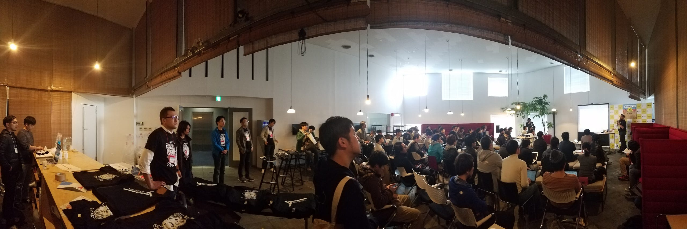
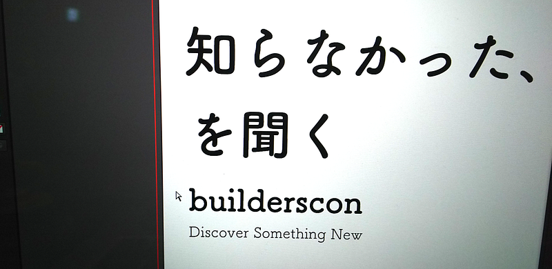

builderscon tokyo 2016を終えて

builderscon tokyo 2016を終えて
私、カンファレンス運営から引退するする詐欺をしてしまいました。本当にすみません。
というわけで昨日はbuilderscon tokyo 2016の日でした。以下、私のオープニングスライドです。ノートがついていないのでなんのこっちゃかとは思いますが。
しかしやはりやってしまうとカンファレンス運営とは良い物です。 builderscon tokyo 2016が終わった昨日は大変心地よい疲れとともに良い睡眠を得る事ができました。
今回自分がこのような「技術者が楽しめる」「でもひとつの技術の枠にとらわれない」カンファレンスをやりたいと思った理由はオープニングで語らせてもらった通り、基本的には自分が聞きたいトークを集めたいとか、楽しいお祭りの場を提供したい、というモチベーションがあったからです。
ですがそれ以外に自分がなんとなく感じてる不安に対する方策としてのbuildersconでもあります。それは自分がここまで属させてもらっていた広義のWeb業界の中で技術者として生き残っていくのはどんどん難しくなるだろう、という不安です（注：あくまで不安であり、何かの統計等からの推論ではないのでエビデンスを出せとは言わないでね！）。しかし自分の感じてる不安はあくまで「業界に対して」の話であって、我々技術者が使っている技術そのものの話ではありません。我々の培ってきた技術は、これまで歴史的にWeb業界とは疎遠であった分野にもきっと適用できると考えています。
そこで「知らなかった、を聞く」ためのカンファレンスである builderscon です。

我々はもっと他の技術分野やビジネス分野を知るべきだし、他の技術・ビジネス分野の人達ももっと我々の事をしるべきではないか、と自分は考えています。違う分野に我々の技術を適用したり、違う分野からの考え方を導入していきたい。そしてそのためには特定の技術分野においての制限はないほうがよいに決まっている… さらにそれらの人と知識の交流の場、クロスロードとして、学会やエキスポジションのようなものではなく「お祭り」があると良いのではないかと自分は考えたのです。
そう言ったところから始めて、今回のbuildersconは スタッフ、参加者、登壇者、スポンサーの皆様の多大な協力を得て開催にこぎ着け、Twitter等の反応を見る限りは大成功に終わったと思います。
特にトークのテーマの多様性については本当に予想以上に自分のイメージと合っていて、びっくりしました（ちなみに若干ハードウェア系の話が自分のカンファレンスの構成イメージよりは多かったですが、これは偶然です）
Discover Something New - builderscon is a festival for those who love tech!builderscon.io
また、まだ実績がないのにスポンサーをしてくださった企業の皆様には本当に感謝にたえません。本当にありがとうございました！
ちなみにこれまでの歴史があるので、もうしばらくは主なターゲットはWeb業界の皆様にしていこうとは考えていますが、今後参加人口によってはその辺りは変わっていくかもしれません。本当はもっと広い範囲の人にリーチしたいのです。この辺りは世間の情勢等を踏まえてまた考えていきたいと思います。
今後？そうですね、もう次の会場も押さえてあります。スポンサーに興味がある方はTwitter/Facebook/Slackで私 @lestrrat までご連絡ください。 スポンサーにたくさんついていただかないと開催できません。是非上司等に打診してみてください！！
とにかく今回は最高でした！
写真、動画、ブログのまとめ等はこれから時間を見繕って作業を始めますので、少々お待ちください。